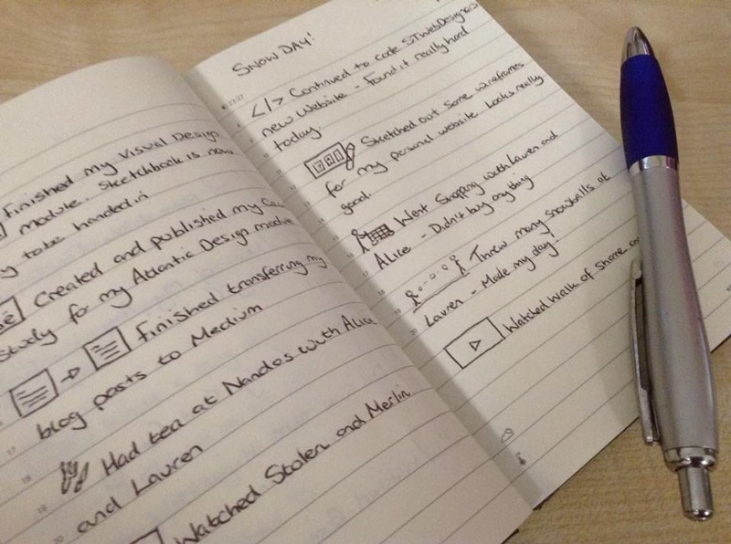

Why do I keep a diary?
Published: 22nd April 2016
Firstly, yes I keep a diary but not in the way you may think. I don’t sit there writing ‘Dear Diary’ with paragraphs of what I did that day. Instead every night before bed I jot down the tasks I did that day which consists of a small, usually rubbish, illustration and a sentence of what I did. An example would be an illustration of a shopping trolley with the sentence of ‘Went shopping to get a few frozen items.’ I know, such an awful example… but it was the first thing that popped into my head when writing this.
Why do I do this every evening before bed?
I personally feel that it is a great way to reflect on what I’ve actually done that day as it is very easy to forget the small tasks that you do. By writing the things I have done down on paper I can truly see what I have achieved that day allowing me to access whether I have done a lot of work or not. In addition to this, I can also make notes on how I felt about some of those tasks without writing an essay. It is also quite funny to look back at what I wrote and did. It always make me laugh!

I have only been keeping a diary for a few months now and I feel it’s a brilliant thing to do. This is mainly due to it not taking a long time to do as it is only a quick illustration and a short sentence of what I did and it allows me to see what I have achieved that day.
Do you keep a diary? If you do, do you feel it benefits you?